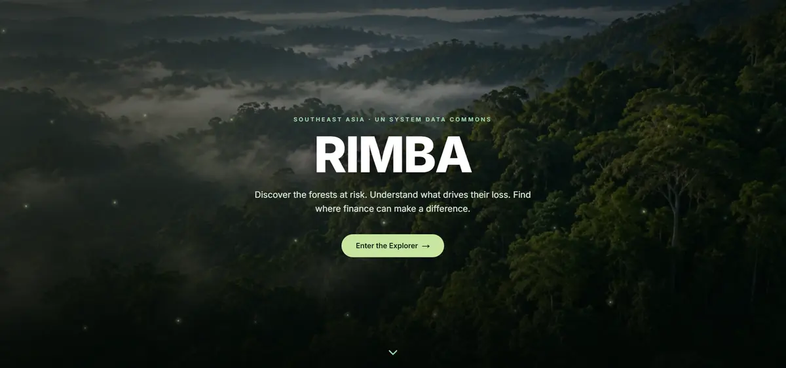

Urban data · Climate · Public decisions
Researching cities with data.
Building tools for action.
I’m an urban data science graduate student with experience across analytics, policy, and architecture. I turn complex datasets into maps, models, and tools that make real-world questions easier to explore.
Selected work
01—04 / Climate & cities
RIMBA
An interactive explorer connecting forest vulnerability with climate-finance allocation across regions. Co-created for the UN System Data Commons × Google open call.
Open the explorer ↗S.P.O.N.G.E.
A dashboard prototype for street-scale monitoring of canal water levels, pH, and contamination—imagining a shift from reactive infrastructure toward proactive ecological management.
View the prototype ↗Floodlink NYC
A long-range flood-forecast dashboard concept developed with a Staten Island community group and New York City partners.
View the dashboard ↗Time or money?
A GIS story map exploring how housing value and commute trade-offs shape choices across New York City.
Read the story map ↗